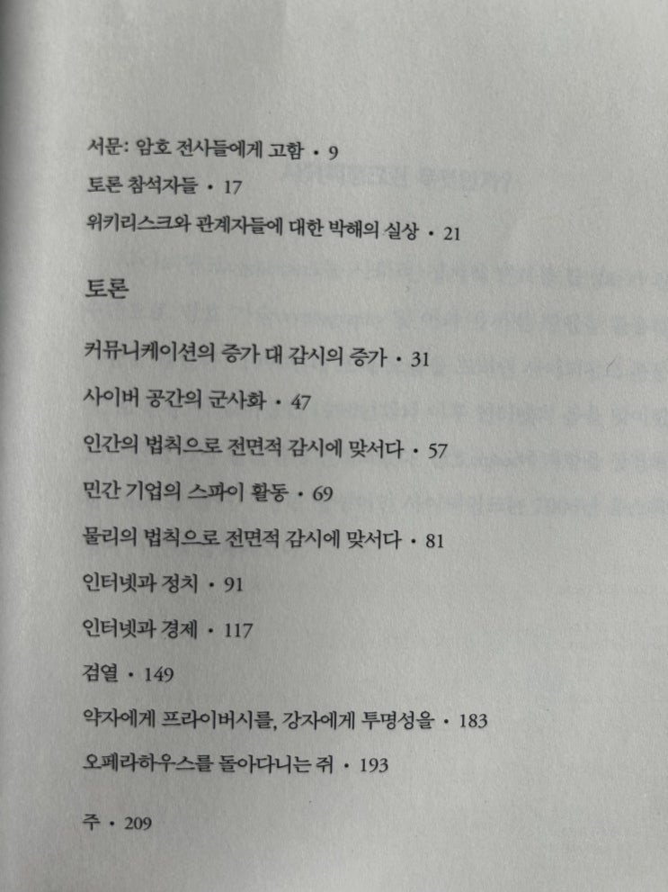
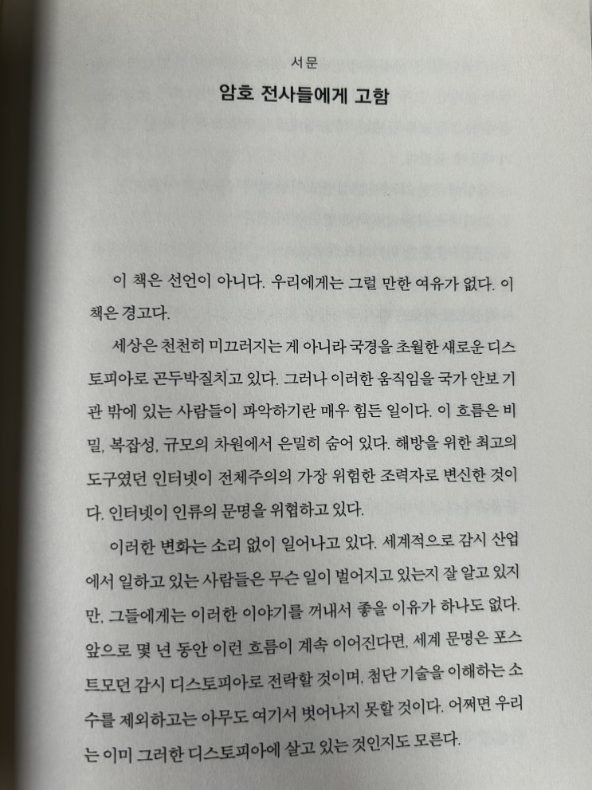
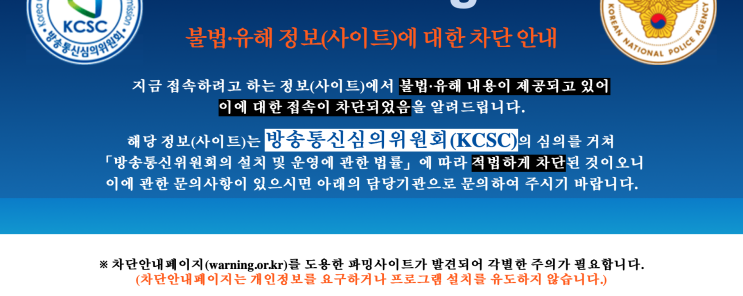
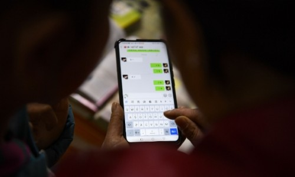

지지난주 부터 해서 좋은 책을 한 권 읽었다. 이전부터 유명한 책이라서 읽고 싶었는데 한국에선 이미 절판되었고 결국 중
고를 구해서 읽게 되었다.

책은 위키리크스의 설립자인 '줄리언 어산지' 와 세 명의 패널이 같이 토론을 하는 내용을 엮어 만든 책이다. 마치 플라톤
의 네 대화 편 (연극 대본같은 구성이라고 보면 된다) 과 같이 구성되어 있다.
사이퍼펑크란 무엇인가?
사이퍼펑크cypherpunk는 사회적, 정치적 변화를 달성하기 위한 수단으로 암호 기술cryptography 및 이와 유
사한 방법을 활용하는 사람을 말한다.' 1990년대 초에 모습을 드러낸 사이퍼펑크 운동은 〈암호 전쟁>이 벌어졌
던 1990년대와 이후 인터넷의 봄을 맞이했던
2011년에 가장 활발하게 전개되었다. 암호cipher에 저항을 상징하는 펑크punk를 붙여서 만든 합성어인 사이
퍼펑크는 2006년 옥스퍼드 영어사전에 등재되었다
토론은 아래와 같은 내용으로 구성되어 있는데, 인간에게 의사표현과 정보 교환의 자유를 줄 것으로 기대되었던 인터넷이
어떻게 사람들을 억압하고 감시하기 위한 정부의 무기로 변화되었는가에 대해 주로 이야기를 나누고 이에 곁가지로 이것
저것 이야기를 하는 방식으로 구성으로 되어 있다.

약자에게 프라이버시를, 강자에게 투명성을
마음을 깊게 울리는 문구이다
책은 서문 내용이 가장 이 책에서 담고 있는 핵심 메시지를 담고 있다. 아무래도 토론은 토론이다보니 약간 중구난방일 수
밖에 없고 (실제로 읽다보면 갑자기 왜 ? 라는 의문이 생기는 상황도 꽤 있다. 토론을 받아 적은 것이니 이해하도록 하자),
서문은 이 책을 쓰면서 다시 작성한 글이니 더 간결하고 논리를 정확히 기술할 수 있었기 때문일 것이다.
저작권이 있어 전체 문장을 올릴 순 없고, 일부만 실어 본다.
이 책은 선언이 아니다.
우리에게는 그럴 만한 여유가 없다.
이 책은 경고다.
서문: 암호 전사들에게 고함
책의 서문, 첫 장, 첫 문장에 이 책에서 지향하는 바를 정확히 말한다. 이렇게 강렬한 서문을 읽어본 적이 있었나? 이 책이
무엇을 지향하는지 이 한 문장만 읽어보더라도 모두 이해할 수 있다. 나머지는 디테일일 뿐이다.

가장 먼저,
국가는 강제력을 바탕으로 운용되는 시스템
이라는 점을 상기하자. 한 국가 내에서 정당들은 국민들
의 지지를 놓고 경 쟁을 벌인다.
겉보기에는 민주적인 형태로 보이지만, 결국 국가를 유지하는 근간은 폭력을 조
직적으로 활용하고 이를 회피하게 하는 것
이다. 토지 소유, 재산, 임대, 과세, 벌금, 검열, 저작권, 상표권과 같
은 모든 제도는 국가가 행사하는 강제력을 기반으로 유지된다.
그러나 대부분의 시간 동안 우리는 폭력이 얼마나 자신의 코앞에까지 다가와 있는지 인식조차 못하고 있다.
우
리 모두가 폭력을 피하기 위해 순응하는 데 익숙해져 있기 때문
이다. 뱃사람이 바닷바 람을 맞는 것처럼, 우리
모두는 우리가 살아가는 세상 아래에 거대 한 어둠의 그림자가 도사리고 있다는 사실에 대해 별로 심각하게 생
각하지 않는다.
서문 중
핵무기를 보유한 나라들은 수백만 명의 사람들에게 무제한적인 폭력을 행사할 수 있다.
하지만 강력한 암호 기
술이 존재하는 한, 국가는 무제한적인 폭력을 행사할 때조차 개인적인 정보를 안전하게 지키고자 하는 사람들의
의지를 꺾을 수 없다.
강력한 암호 기술은 무제한적인 폭력 행사에 저항할 수 있다. 어떠한 강제력을 동원하더라도 수학 문제는 풀리
지 않을 것이다
서문 중
남은 숙제는 우리가 지킬 수 있는 자결권을 확보하고, 우리가 어떻 게 해볼 수 없는 디스토피아의 도래를 가능한
한 지연시키는 일이다.
만약 이 두 가지가 모두 실패한다면, 자기 파괴는 가속화될 것이다.
서문 중
위에도 적어두었지만, 서문에서 사실상 이 책이 하고 싶은 이야기를 다 한다. 그만큼 명문이니 관심이 있는 사람이라면 꼭
읽어보길 바란다.
책의 본문들은 모두 서문의 디테일이라고 볼 수 있다.
재미있는건 인터넷과 경제 이야기를 할 때 비트코인 이야기가 나온다는 것과 필터링에 대한 이야기였다(비트코인 이야기
는 기대도 안했었는데). 내용이 너무 방대하므로 몇 가지만 발췌해서 올려본다. 다시한번 이야기하지만 꼭 스스로 읽어보
길 추천하는 내용들이다.
(비트코인에 대해서 이야기 하면서)
이러한 성장세가 계속 이어진다면 강력한 탄압이 예상
됩니다. 물론 암호 기술을 기반으로 위압적인 세력의 단순
한 공격을 효과적으로 막아 낼 수 있기 때문에 비트코인이 사라지는 일은 없겠지만, 비트코인을 거래하는 외환
서비스 업체들은 더 쉽게 공격을 받게 될 겁니다.
다른 한편에서, 비트코인의 거래는 세상 어디에 서든 이루어지
고,
그래서 몇몇 관할권에서는 거래가 완전히 사라지기 전에 법률을 통과시켜야 하며, 그러면 암시장에서는 그
들만의 교환 논리를 가지게 됩니다. 제 생각이 이러한 문제를 해결하기 위해서 는 사람들이 페이스북 등에서 구
매하는 이러저러한 게임들과 관련 하여 ISP와 인터넷 서비스 업계가 비트코인을 채택하도록 만들어야 합니다.
비트코인은 대단히 효과적인 시스템이므로, 일단 다양한 산업들이 이를 받아들이게 된다면, 그들은 비트코인이
금지당하는 것을 막기 위해 로비를 시작
할 겁니다.
이 책에서의 토론이 일어날 때는 비트코인 가격이 3달러 하던 시절이다 (2012년). 그 때 이미 이러한 예언을 한다는게 참
으로 놀랍다. 사토시 마켓을 설립하게 된 이유도 여기에 잘 나온다. 세상에 사람들이 이러한 편리함을 경험하게 하기 위해
서. 그로인해서 다양한 산업들이 이를 받아들일 수 있게 하기 위해서.
세상엔 정말 예언자들이 있구나.
12년이 지나서 읽는 지금 놀라울 뿐이다.
첨언하자면 지금은 로비 단계로 보인다.
필터링에 대한 개념은 개인적으로 매우 충격적이었는데, 이런 생각을 해본적도 없었기 때문에 그랬다. 내용은 다음과 같
다.
(정부의 정보 필터링에 대해서 이야기 하면서)
앤디 : 오늘날 많은 사람들이 쉬운 해결책을 선호한다는 사실이 문제 입니다. 우리 사회의 현실을 있는 그대로
직시하기가 불편하기 때문 이죠
(아동포르노 등 정보를 만드는 자들을 색출하지 않고 그저 필터링에만 집중하는
현상을 비판하며-아조씨 멘트임)
. 저는 우리가 정치적인 문제를 다룰 기회가 분명히 있을 거라고 생각합니다.
우
리는 그 문제를 외면하거나 보이지 않게 하는 정책을 만들려는게 아니니까요.
어떤 측면에서 이는 사이버 세상
의 정치이며, 또한 사회가 문제를 다루는 방법에 관한 질문입니다. 그리고 저는 직접적으로 피해를 입히는 정보
와 같은 것이 정말로 존재한다 는 주장에 강한 의구심을 품고 있습니다. 관건은 필터링 능력에 달 려 있습니다.
제가 인터넷에서 찾을 수 있는 모든 사진을 볼 생각이 없다는 것은 자명합니다. 정말로 역겹고 재미없는 것들이
있습니다.
하지만 우리는 마찬가지로 동네 비디오 가게에서도 얼마든지 역겹 고 재미없는 영화들을 만날 수 있습니다.
여
기서 문제는 내가 보고,처리하고, 읽는 것들을 다를 능력이 내게 있는가 하는 것입니다.
필터링 방식이란 바로
이런 거죠. 카오스 컴퓨터 클럽의 설립자인 바 우 홀란트는 재미있는 말을 했었습니다.
<필터링은 최종 사용자
들 과 최종 사용자들의 최종 장치에서 이루어져야 한다>
!
줄리언:
정보를 받아들이는 사람이 필터링을 해야 하죠
.
앤디: [자신의 머리를 가리키며] 여기서 이루어져야 해요. 바로 여기서!
줄리언: 머릿속에서.
앤디:
최종 사용자들의 최종 장치에서, 그러니까 양쪽 귀 사이에 있 는 바로 이곳에서 말입니다. 사람들은 바로
여기서 정보를 걸리며, 정부가 그 일을 대신해서는 안 됩니다
(후략)
나조차도 정부의 필터링에 너무 익숙해져 있어서 정부가 정보를 필터링 하는 것에 대해 큰 이견을 가지고 있지 않았는데
그것은
나 스스로가 나에게 오는 정보를 필터링하겠다는 의지를 포기한 것
이고 그저 가축처럼 정부가 끄는대로 가겠다는,
그리고 결국에는 좋건 싫건 정부가 보여주고 싶은 것만 보겠다는 순종적인 성향이 나도 모르게 내재화 되어 있었다는 것에
적지 않은 충격을 받았다.

누가 뭘 보고 받아들일지는 그 사람이 결정해야 한다.
물론 여기서는 그러한 판단 능력이 떨어지는 아이들에 대한 문제가 발생하기도 한다.
이 두 가지 외에도 상당히 폭넓은 이야기들이 나오는데, 주석까지 잘 달려있어서 매우 읽을만 하다. 나도 그간 사이퍼펑크
운동에 대해 어렴풋하게만 알고 있었는데 이 참에 더 공부를 해보아야겠다는 생각이 들었다.
그나저나.
이 책이 씌여진지 12년이 지났고.
내가 봤을 땐 그 전보다 대중의 인터넷 상황은 더 악화된 듯 하다.
하지만 한편으로는 정부의 억압에 대응할 인터넷 기술들이 나오고, 비트코인이 이전보다 확산되었으며, 중국 정부의 검열
사례 등이 알려지면서 사람들도 조금씩 경각심을 가지게 되었다.

'?카카오톡' 위챗도 일부 접속불가…원인은 '실시간 검열' - 글로벌이코노믹
판교 데이터센터 화재로 카카오톡이 약 14시간 동안 마비됐던 가운데 '중국판 카카오톡'으로 불리는 위챗 또한 일부 이용
자들이 접속 불가 문제로 곤욕을 치르고 있다. 공산당 전국대표대회(전당대회) 개최에 따라 '인터넷 검열'이 강화된 것이
원인으로 지목된다.파이낸셜 타임즈, BBC 등 외
www.g-enews.com
앞으로도 오랫동안 정치/경제/문화 사회의 전 분야에서 이러한 억압하고자 하는 힘과 억압을 물리치고자 하는 힘이 서로
힘을 겨룰 것이다.
여기서 어느 편을 선택하건 그것은 당신의 자유이다.
끝.